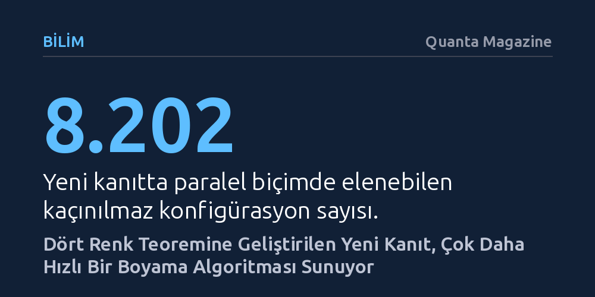

BILIM · Quanta Magazine · 2026-09-11
Matematikçiler, ünlü dört renk teoremini düzlemsel çizgelerin düz bölgelerindeki binlerce konfigürasyonu aynı anda indirgeyerek yeniden kanıtladı. Bu yeni yaklaşım, haritaları boyama işlemini n² karmaşıklığından n log n seviyesine indirerek algoritmayı belirgin şekilde hızlandırıyor.
Çözülmüş bir matematik problemini yeniden kanıtlamanın sadece bir inat olmadığını, nesnelerin yapısına dair yeni kavrayışlar açarak çok daha verimli algoritmalar üretebileceğini gösteriyor.

Bir matematik probleminin kesin bir kanıta kavuşması, her zaman tartışmaları noktalamaya yetmiyor. Bazen sunulan çözüm zihinleri tatmin etmeyecek kadar dolambaçlı oluyor; bazen de sonucun doğruluğunu gösterse bile bunun 'neden' öyle olduğuna dair derin bir kuramsal kavrayış sunamıyor. Haritacılıkta komşu ülkelerin aynı renge boyanmaması için dört rengin her zaman yeteceğini öne süren dört renk teoremi, yaklaşık 150 yıldır matematikçilerin zihnini kurcalayan bu tür takıntıların başında geliyor.
1970'lerde bilgisayar desteğiyle çözülen ve o dönem matematik çevrelerinde geleneksel kanıt anlayışını sarstığı için fırtınalar koparan teorem, 2026 yılında yeni bir bilgisayarlı kanıtla tekrar gündeme taşındı. Danimarka, Kanada ve Japonya'dan bir grup araştırmacı, problemin 1997'de sadeleştirilen bilgisayarlı kanıtıyla yetinmeyerek meseleyi baştan ele aldı. Kasım 2026'da prestijli Foundations of Computer Science (FOCS) konferansında sunulacak bu yeni çalışma, bilgisayarı öncekilerden çok daha yoğun biçimde kullansa da haritaları boyamak için eşi görülmemiş hızda yepyeni bir algoritma ortaya koyuyor.
Dört renk bilmecesi ilk kez 1852'de Francis Guthrie'nin İngiltere haritasını renklendirirken dört rengin yettiğini fark etmesiyle başladı. 1879'da Alfred Bray Kempe, dört renkle boyanamayan 'en küçük haritayı' varsayıp çelişki arayan zarif bir tersine kanıt yöntemi sundu. Kempe haritayı bir düzlemsel çizgeye dönüştürdü; ülkeleri noktalara, ortak sınırları ise çizgilere indirgedi. Buradaki kilit fikir, haritada kaçınılmaz olarak bulunması gereken bazı düğüm düzenlerini saptamak ve bunları çizgeden çıkarıp renkleri zincirleme kaydırarak (Kempe zincirleri) eksik parçayı beşinci renge ihtiyaç duymadan geri ekleyebilmekti.
Ancak bu zarafetin arkasında ölümcül bir kusur gizliydi. On bir yıl sonra Percy John Heawood, çıkarılan düğümün beş komşusu olduğu durumlarda renk kaydırma hamlesinin aynı renkleri yan yana getirebildiğini gösterdi. Kempe'nin kanıtı çökmüştü; fakat geliştirdiği renk takası mekanizması sonraki tüm çalışmaların merkezinde kaldı. Kempe'nin listelediği düzenlerin tümünü elle indirgemek imkansızdı; çünkü eksiksiz bir kanıt için binlerce karmaşık konfigürasyonun incelenmesi gerekiyordu. Nihayet 1976'da Kenneth Appel ve Wolfgang Haken, süper bilgisayarlar kullanarak 1.482 konfigürasyonu teker teker eledi ve teoremi kanıtladı. 1997'de ise bu sayı 633'e indirilerek matematik dünyasında genel kabul gördü.
1997'deki kanıt teoremi sağlamlaştırmış olsa da geride oldukça hantal bir yöntem bırakmıştı. n köşeli bir çizgeyi boyamak için gereken algoritma n² adımda çalışıyordu. Harita üzerinde uygun bir konfigürasyon aranıyor, bulunup çıkarılıyor, ardından sıradaki konfigürasyona geçiliyordu; yani her şey tek tek ve sırayla yapılıyordu. Ken-ichi Kawarabayashi, Mikkel Thorup, Carsten Thomassen ve Bojan Mohar'dan oluşan ekip, bu süreci hızlandırmak için konfigürasyonların birbirinin boyamasını bozmadan aynı anda indirgenebileceği yeni bir kaçınılmaz küme inşa etmeye karar verdi.
Araştırmacılar bu amaçla önceki matematikçilerin göz ardı ettiği, çizge teorisinin 'sahipsiz toprakları' sayılan düz bölgelere yöneldi. Bu bölgelerde her düğüm altı başka düğüme bağlanarak üçgenlerden oluşan düzenli bir doku meydana getiriyordu. Düz bölgeler indirgenebilirlik kanıtlarında kullanılan belirgin yapısal ipuçlarından yoksundu; ancak haritanın geneline çok daha yaygındı ve çok sayıda bağımsız seçenek sunuyordu. Doktora öğrencileriyle birlikte aylarca süren bilgisayar hesaplamalarının ardından ekip, tam 8.202 konfigürasyondan oluşan devasa bir küme tanımlamayı başardı. Bu düzenlerin birçoğu aynı anda elenebildiği için işlem süreci radikal biçimde kısaldı.
Geliştirilen yeni yaklaşım, n köşeli bir haritanın boyanma karmaşıklığını n² seviyesinden n log n seviyesine indirerek kuramsal bilgisayar biliminde devasa bir hızlanma sağladı. Ancak çalışmanın asıl kıymeti sadece boyama hızında yatmıyor. Düzlemsel çizgelerin bugüne dek gözden kaçırılmış düz bölgelerindeki gizli örüntüleri açığa çıkaran bu kanıt, çizge teorisindeki diğer çetin problemlerin çözümü için de güçlü bir kuramsal alet çantası sunuyor.
Buna rağmen matematikçilerin içindeki huzursuzluk tamamen dinmiş değil. Yeni çalışma daha fazla işlem gücü ve çok daha devasa bir konfigürasyon listesi gerektirdi; fakat dört rengin neden yettiğini tek bir bakışta hissettiren o efsanevi 'tek sayfalık sade kanıt' hala bulunabilmiş değil. Araştırmacılar, bilgisayarların ürettiği veri dağlarının ardında yatan o yalın ve zarif gerçeği aramaya devam ediyor.